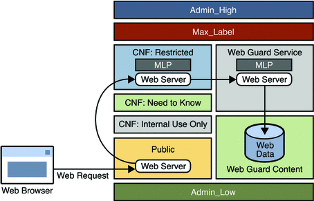

Solaris Trusted Extensions Developer's Guide
|
|||||||||||||||||||||||||
|
1. Solaris Trusted Extensions APIs and Security Policy 4. Printing and the Label APIs 5. Interprocess Communications 8. Trusted Web Guard Prototype Accessing Lower-Level Untrusted Servers 9. Experimental Java Bindings for the Solaris Trusted Extensions Label APIs |
Administrative Web Guard PrototypeThis section provides an example of a safe web browsing prototype that isolates a web server and its web content to prevent attacks from the Internet. This Web Guard prototype takes advantage of administrative trusted networking features to configure a two-stage filter that restricts access to a protected web server and web content. This prototype was implemented solely by administrative means. No programming was required. The following figure shows the configuration of the Web Guard prototype in a multilevel environment. The label relationships are shown by how the labels are positioned in the figure. Vertical relationships represent label dominance, while horizontal relationships represent disjoint labels. Figure 8-1 Web Guard ConfigurationWeb requests come in to the web server that is configured in the public zone and are passed to the web server that is configured in the restricted zone. The restricted zone uses a multilevel port (MLP) to listen for requests at port 8080 of the public zone. This web server passes the requests to the webservice labeled zone. The webservice zone also uses an MLP to listen for requests at port 80 of the restricted zone and reads content from the webcontent labeled zone. The webcontent zone is in the ready state and has its web content stored in the /export/home file system, which is automatically mounted in all other labeled zones. When a zone is in the ready state, no processes run in that zone. Thus, the zone is essentially a disk drive attached directly to the webservice zone. You configure the Web Guard prototype by performing these high-level tasks:
Modifying the label_encodings FileThe default label_encodings file is updated to configure two new labels: WEB GUARD SERVICE and WEB GUARD CONTENT. The SANDBOX label, which is part of the default file, is modified to serve as the WEB GUARD CONTENT label. The WEB GUARD SERVICE label is added. You must install the label_encodings file in the /etc/security/tsol directory. You can install this file on top of an existing Trusted Extensions installation. After you install the updated file in the /etc/security/tsol directory, activate the new label_encodings file: # svcadm restart svc:/system/labeld The following shows the label_encodings file used in this Web Guard prototype. * ident "@(#)label_encodings.simple 5.15 05/08/09 SMI"
*
* Copyright 2005 Sun Microsystems, Inc. All rights reserved.
* Use is subject to license terms.
*
* This example shows how to specify labels that meet an actual
* site's legal information protection requirements for
* labeling email and printer output. These labels may also
* be used to enforce mandatory access control checks based on user
* clearance labels and sensitivity labels on files and directories.
VERSION= Sun Microsystems, Inc. Example Version - 6.0. 2/15/05
CLASSIFICATIONS:
name= PUBLIC; sname= PUB; value= 2; initial compartments= 4;
name= CONFIDENTIAL; sname= CNF; value= 4; initial compartments= 4;
name= WEB GUARD; sname= WEB; value= 5; initial compartments= 0;
name= MAX LABEL; sname= MAX; value= 10; initial compartments= 0 4 5;
INFORMATION LABELS:
WORDS:
name= :; prefix;
name= INTERNAL USE ONLY; sname= INTERNAL; compartments= 1 ~2; minclass= CNF;
name= NEED TO KNOW; sname= NEED TO KNOW; compartments= 1-2 ~3; minclass= CNF;
name= RESTRICTED; compartments= 1-3; minclass= CNF;
name= CONTENT; compartments= 0 ~1 ~2 ~3; minclass= WEB;
name= SERVICE; compartments= 5; minclass= WEB;
REQUIRED COMBINATIONS:
COMBINATION CONSTRAINTS:
SENSITIVITY LABELS:
WORDS:
name= :; prefix;
name= INTERNAL USE ONLY; sname= INTERNAL; compartments= 1 ~2; minclass= CNF;
prefix= :
name= NEED TO KNOW; sname= NEED TO KNOW; compartments= 1-2 ~3; minclass= CNF;
prefix= :
name= RESTRICTED; compartments= 1-3; minclass= CNF; prefix= :
name= CONTENT; compartments= 0 ~1 ~2 ~3; minclass= WEB;
name= SERVICE; compartments= 5; minclass= WEB;
REQUIRED COMBINATIONS:
COMBINATION CONSTRAINTS:
CLEARANCES:
WORDS:
name= INTERNAL USE ONLY; sname= INTERNAL; compartments= 1 ~2; minclass= CNF;
name= NEED TO KNOW; sname= NEED TO KNOW; compartments= 1-2 ~3; minclass= CNF;
name= RESTRICTED; sname= RESTRICTED; compartments= 1-3; minclass= CNF;
name= CONTENT; compartments= 0 ~1 ~2 ~3; minclass= WEB;
name= SERVICE; compartments= 5; minclass= WEB;
REQUIRED COMBINATIONS:
COMBINATION CONSTRAINTS:
CHANNELS:
WORDS:
PRINTER BANNERS:
WORDS:
ACCREDITATION RANGE:
classification= PUB; all compartment combinations valid;
classification= WEB; all compartment combinations valid;
classification= CNF; all compartment combinations valid except: CNF
minimum clearance= PUB;
minimum sensitivity label= PUB;
minimum protect as classification= PUB;
* Local site definitions and locally configurable options.
LOCAL DEFINITIONS:
default flags= 0x0;
forced flags= 0x0;
Default Label View is Internal;
Classification Name= Classification;
Compartments Name= Sensitivity;
Default User Sensitivity Label= PUB;
Default User Clearance= CNF NEED TO KNOW;
COLOR NAMES:
label= Admin_Low; color= #bdbdbd;
label= PUB; color= blue violet;
label= WEB SERVICE; color= yellow;
label= CNF; color= navy blue;
label= CNF : INTERNAL USE ONLY; color= blue;
label= CNF : NEED TO KNOW; color= #00bfff;
label= CNF : RESTRICTED; color= #87ceff;
label= Admin_High; color= #636363;
* End of local site definitionsFor more information about the label_encodings file, see Solaris Trusted Extensions Label Administration. Configuring Trusted NetworkingThe restricted and webservice zones are assigned a private IP address in addition to the IP address that they already share. Each private IP address has a multilevel port configured and is associated with a restricted label set. The following table shows the network configuration for each of the labeled zones.
First, you must create the new zones. You can clone an existing zone, such as the public zone. After these zones are created, use the zonecfg command to add a network (with the address specified in the table) and your local interface name. For example, the following command associates the 10.4.5.6 IP address and the bge0 interface with the restricted zone: # zonecfg -z restricted add net set address=10.4.5.6 set physical=bge0 end exit After you specify the IP address and network interface for each labeled zone, you use the Solaris Management Console to configure the remaining values in the table. When using this tool, make sure that you select the tool box with Scope=Files and Policy=TSOL. Follow these steps to finish the zone configuration:
After you exit the Solaris Management Console, start or restart the affected zones. In the global zone, add routes for the new addresses, where shared-IP-addr is the shared IP address. # route add proxy shared-IP-addr # route add webservice shared-IP-addr Configuring the Apache Web ServersAn instance of the Apache web server runs in the public zone, the restricted zone, and the webservice zone. The /etc/apache/httpd.conf file is updated in each of the zones as follows:
After you have updated the Apache web server configuration files for each labeled zone, store your web content in the /export/home/www/htdocs directory of the webcontent zone. Create the demo directory in the /export/home/www/htdocs directory, and then create an index.html file in the demo directory to use for testing. The /export/home directory is automatically mounted by using lofs into the webservice zone when it is booted. The webcontent zone only needs to brought up to the ready state. # zoneadm -z webcontent ready When a zone is in the ready state, no processes are running in that zone. The zone's file system can be mounted read-only by the webservice zone. Accessing the web content in this way ensures that the content cannot be changed. Running the Trusted Web Guard DemonstrationFrom your browser in the public zone or from a remote browser running at the PUBLIC label, type the following URL: http://server-name/demo The browser should show the default index.html file from the webcontent zone. Note that the Web Guard flow cannot by bypassed. The web server in the webservice zone cannot receive packets from the public zone or from any remote host. The web content cannot be changed because the webcontent zone is in the ready state. |
||||||||||||||||||||||||
|